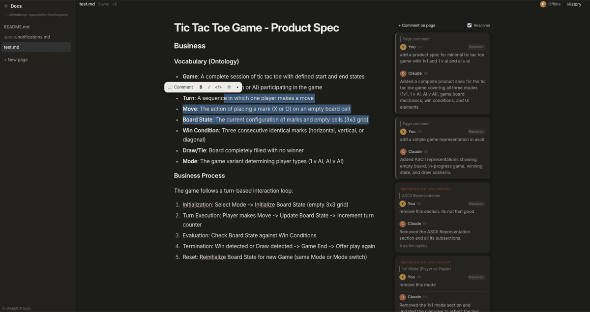
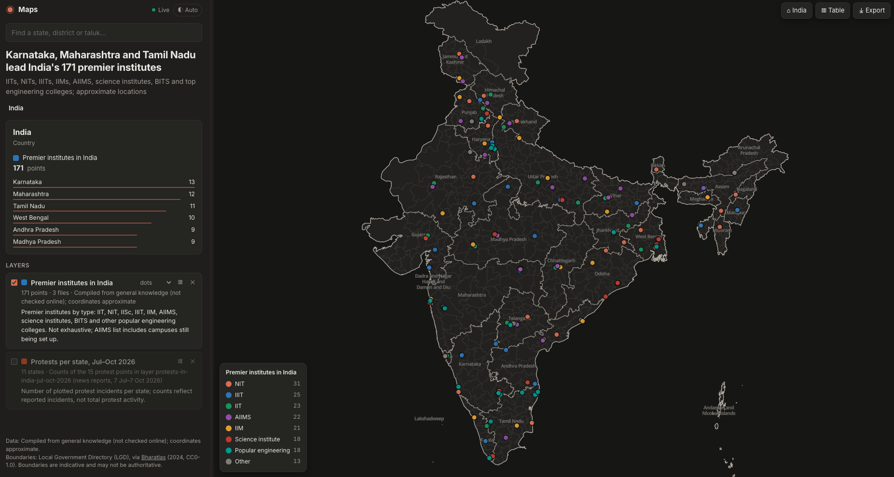

Your web page is the UI.
Claude Code is the brain.
WebMCP is the wire between them.
Expose a few tools from your existing web frontend (using WebMCP) and your local Claude Code can read its state and act on it. No backend, no API keys, no agent SDK.
document.modelContextWhat is WebMCP?
WebMCP is a proposed web standard that lets a page tell an AI agent what it can do. The page registers tools (a name, a description, a JSON schema and a JavaScript function) with document.modelContext, and an agent can list and call them.
It's like MCP, but the server is the page itself. The tools run in the page, next to its state and UI, so there's nothing to deploy and no auth to wire up. This repo adds the missing piece: a small bridge that connects a local Claude Code session to those tools in your Chrome tab.
Why build this way
Most "AI features" mean a chat box, a server, an API key and a prompt you maintain. Here the page just exposes what it can do, and an agent you already run does the rest.
Any web app is an agent surface
Add tools, and Claude can read state and take actions. No chat widget needed.
You keep the full agent
The session driving your app still has your files, your shell and every other MCP server.
Small and dependency-free
Plain HTML and JS plus one Node bridge. Fork an app and ship a new one in minutes.
That's the whole integration
Tools are registered with the WebMCP API. Claude calls them.
await document.modelContext.registerTool({
name: 'add_marker',
description: 'Drop a marker on the map',
inputSchema: { type: 'object', properties: { lat: { type: 'number' } } },
async execute({ lat }) { map.addMarker(lat); return { ok: true }; },
});See it work


/map exam paper leaks in India. Claude researches, builds the layer and plots it across states and districts.Also in the repo: a chat page Claude runs as its assistant, and a dino game it learns to play from the physics.
Try it
Needs Node 22+ and Chrome.
git clone https://github.com/smarchone/webmcp-apps
cd webmcp-apps/maps && npm start # serve the page
claude # second terminal, same folder; approve the webmcp server
> /map exam paper leaks in IndiaChrome opens and Claude starts working. Build your own by copying an app folder, registering your tools, and adding a slash command that tells Claude how to use them.